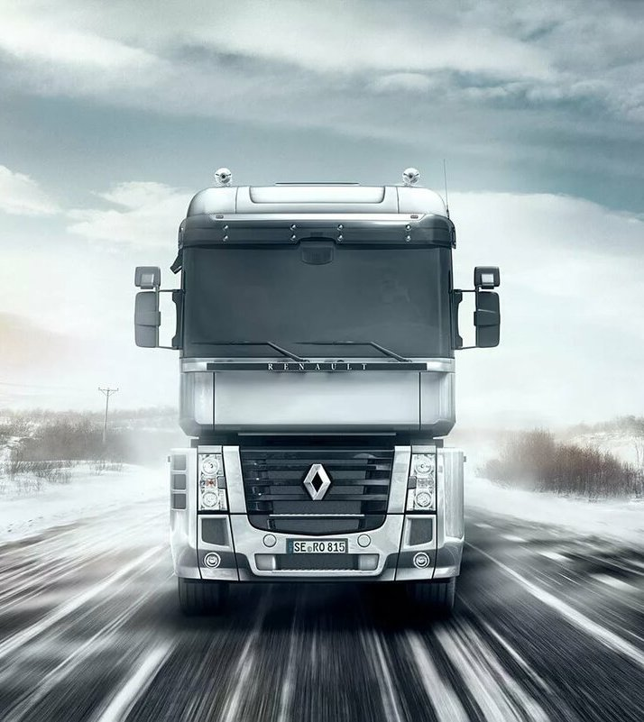
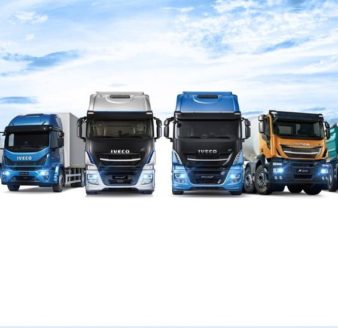

|

 
|
ООО «АТП-174» обладает успешным опытом выполнения проектов транспортного аутсорсинга «с нуля» в самых различных регионах Российской Федерации и гарантирует при этом кратчайшие сроки и наилучшее качество их выполнения. Наши клиенты сталкиваются на своём автотранспортном подразделении (далее АТП) со стандартными проблемами: необоснованно завышенные затраты на содержание АТП и непрозрачные расходы, низкое качество транспортного обслуживания, трудности управления АТП. |